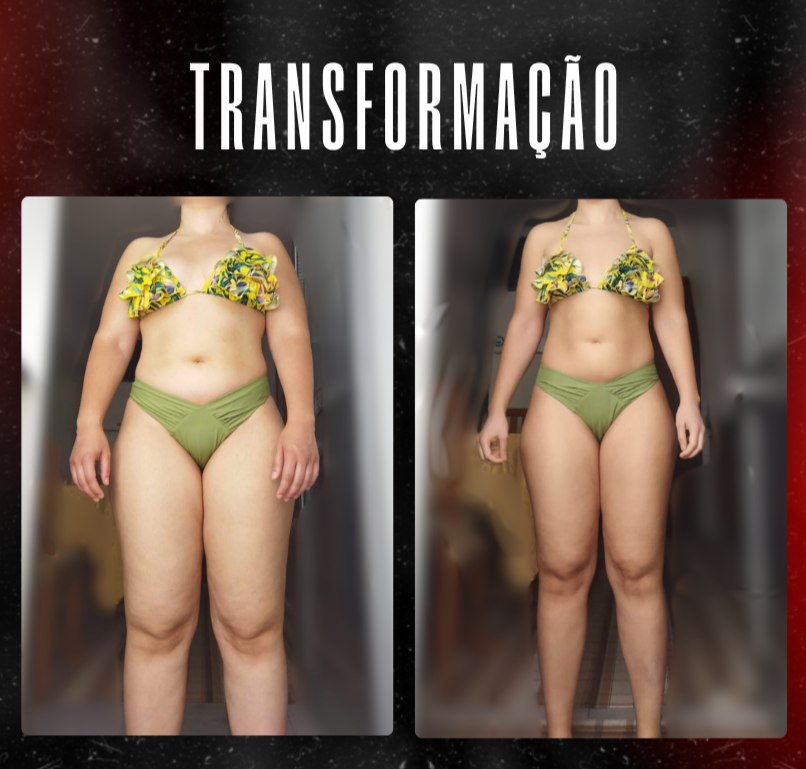
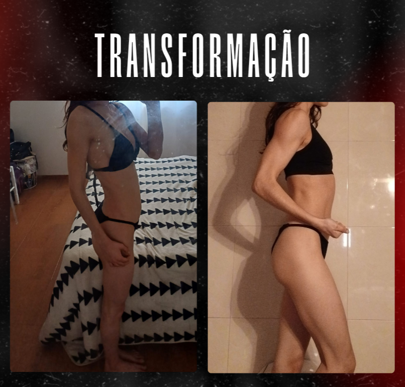
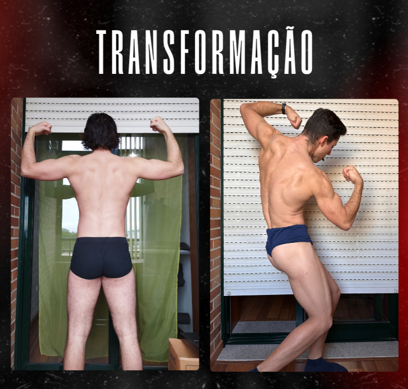
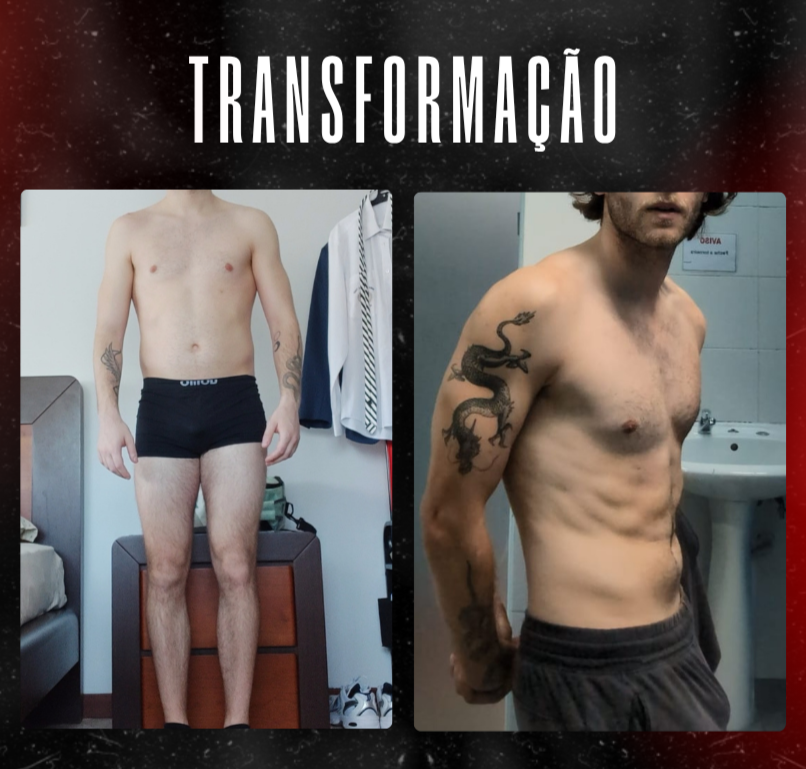

Fitness descomplicado para pessoas comuns. Sem restrições ou planos irrealistas, apenas estratégias reais que se moldam à tua rotina!
A vida não acontece apenas dentro do ginásio ou a pesar gramas de comida. Ela acontece nos jantares de amigos, nas festas de família e naqueles dias em que o trabalho te consome o tempo todo.
Os imprevistos, eventos sociais e saídas de rotina acontecem...e ainda bem! Por isso o meu objetivo é ensinar-te a viver a vida ao máximo enquanto conquistas os objetivos que há tanto tempo tens delineados.
Sempre que priorizaste o fitness e deixaste os prazeres de lado, acabaste a desistir. Vamos fazer diferente?
Os 4 pilares para resultados consistentes.
Montado para a tua realidade e ajustado sempre que necessário. Nenhum imprevisto te deixará sem plano!
Sem planos rígidos ou alimentos proibidos. Vais aprender a fazer escolhas certas e prazerosas em qualquer situação.
Monitorização constante. Se a vida mudar, o plano muda contigo para não estagnares.
O pilar de ouro! Podes partilhar tudo comigo e estou à distância de uma mensagem sempre que precisares.
Serviços personalizados e ajustados ao que precisas.
Treino + Nutrição + Suporte
Para quem quer o pacote completo. Estratégia de treino e alimentação ajustada ao detalhe, com suporte direto e próximo para garantir que chegas onde queres.
Ciclo de 8 Semanas
Cansado daquele plano genérico que o ginásio deu a toda a gente? Se já tens a nutrição orientada mas queres um treino desenhado especificamente para ti, esta é a tua opção.




A ambos. O plano de treino é desenhado de acordo com o material que tens disponível e o local onde preferes treinar. Sem desculpas, apenas soluções.
Absolutamente não. A estratégia nutricional é flexível. Vais aprender a encaixar os alimentos que gostas nos teus macros e calorias diárias, mantendo o défice ou superavit necessário para os teus objetivos.
O pagamento é feito numa base mensal (ou pacotes de meses, se preferires). Todo o processo será detalhado quando falarmos no WhatsApp para perceber qual a melhor opção para o teu caso.
Sem fidelização.
Sim, desde a análise inicial ao ajuste do plano e às respostas no WhatsApp, falas diretamente comigo. O meu objetivo é ser o teu guia, por isso o contacto é pessoal e próximo.
Sem dúvida! Todos tivemos o 'Dia 1'. O meu trabalho é garantir que o teu não é um bicho de sete cabeças. Vou ensinar-te as bases, ajudar-te a evitar os erros mais comuns, não perdes tempo com exercícios inúteis e garantes que não te lesionas logo no primeiro mês.
Depende da gravidade, mas na maioria dos casos, sim. O treino pode (e deve) ser uma ferramenta de recuperação. Se tiveres luz verde do teu médico, eu vou adaptar os exercícios para evitarmos dor e fortalecermos o que é necessário. Segurança em primeiro lugar, sempre!
Aproveitas! Vais aprender a gerir essas situações sem culpa. O acompanhamento é feito com o objetivo final de que consigas aproveitar tua vida social, e não para te isolares em casa com uma marmita de frango e brócolos.
É precisamente por isso que precisas de um acompanhamento. Se só tens 30 ou 40 minutos, o teu treino tem de ser muito bem estruturado. Eu queimo os neuróios com essa parte, tu só tens de chegar ao ginásio e treinar.